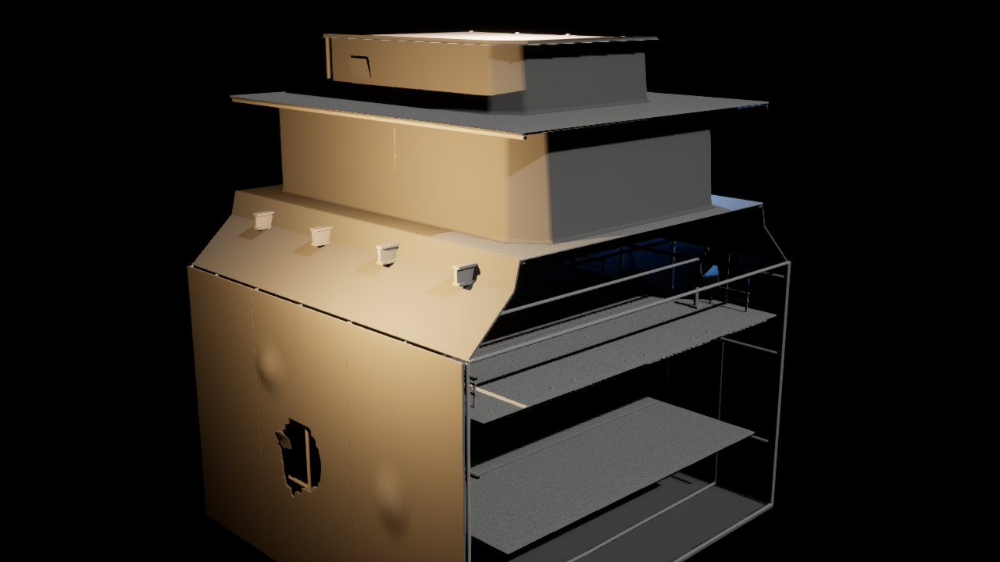

Drowned Ferry SECTION B V08 — UNREAL QA REVIEW
V07 controlled damage is PASSED. Section B has now completed full Blender QA and isolated Unreal 5.8 import/gameplay QA: exact export dimensions, four full standing-player capsule route sweeps, four floor-support traces, and Map Check 0 errors / 0 warnings.
Current Ferry Review

Section B — Unreal QA V08 AUTOMATED PASS / AWAITING GAME DIRECTOR
Blender mesh/route QA passes; Unreal dimensions match exactly; B1 main, B1 upper, B2 lounge and B3 vehicle full capsule sweeps all pass; Map Check 0 errors / 0 warnings.
Approved Non-Ferry Assets

Marine Crane
Approved Workflow 2.0 companion asset.

Floating Work Platform
Approved Workflow 2.0 companion asset.

Workshop Module V02
Approved Workflow 2.0 companion asset.